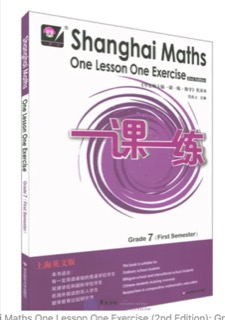
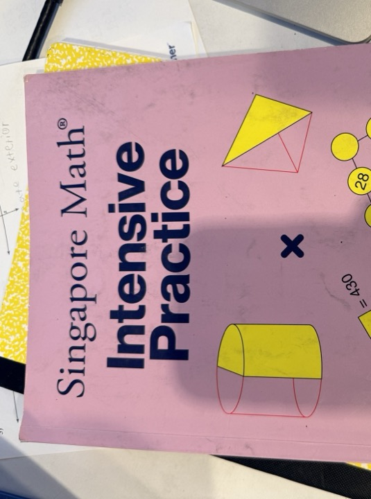

Core textbook
Shanghai Maths · Grade 3
One Lesson One Exercise (2nd Edition)

Core textbook
One Lesson One Exercise (2nd Edition)

Companion practice
Extra practice mapped to Shanghai ideas
One Lesson One Exercise
Chapters 1–6 — revision, multiplication, time, division, geometry, and consolidation.
Place value, unit language, parts of +, −, ×, and properties · pages 1–2
Open → 1.2Order of operations, column method, division relationship · pages 3–5
Open → 1.3Solids, square, units, triangles, and applications · pages 6–7
Open → 1.4×÷ chains, parentheses, associative models · pages 8–9
Open → 1.5Naming, growing, and tiling polyominoes · pages 10–11
Open → UT1Chapter 1 review — fluency, geometry, applications · pages 12–15
Open →Place-value patterns and zeros in products · pages 16–17
Open → 2.2Tens×tens, distributive combining · pages 18–19
Open → 2.3Equal groups from pictures and stories · pages 20–22
Open → 2.4Arrays and splitting tens + ones · pages 23–24
Open → 2.5Column method, checking, error analysis · pages 25–26
Open → 2.6Fluency, matching, open sentences · pages 27–29
Open → 2.7Split and column method for hundreds · pages 30–31
Open → 2.8Zeros, inequalities, applications · pages 32–34
Open → 2.9Chapter 2 mixed review · pages 35–37
Open → UT2Chapter 2 assessment · pages 38–41
Open →Dates, days in each month, weekdays · pages 42–44
Open → 3.2Big/small months, elapsed time, true/false · pages 45–48
Open → 3.3365/366 days, ÷4 and ÷400 rules · pages 49–51
Open → 3.4Build next year’s calendar; find holidays · pages 52–54
Open → 3.5Chapter 3 mixed review · pages 55–57
Open → UT3Chapter 3 assessment · pages 58–61
Open →Place-value patterns for ÷ · pages 62–64
Open → 4.2Vocabulary, remainder, equal groups · pages 65–67
Open → 4.3Column method meaning · pages 68–70
Open → 4.4Bounds and inequalities · pages 71–72
Open → 4.5Fluency and enhancement puzzles · pages 73–75
Open → 4.6Rates, packing, unit-price links · pages 76–78
Open → 4.7Extend column method to hundreds · pages 79–80
Open → 4.8Quotient digits and classification · pages 81–83
Open → 4.9Inverse facts and arrangement plans · pages 84–86
Open → 4.10Times as many; find unknowns · pages 87–89
Open → 4.11Checking and interpreting remainders · pages 90–92
Open → 4.12Price triangle and comparisons · pages 93–95
Open → 4.13Multi-step money and mass · pages 96–98
Open → 4.14Chapter 4 mixed review · pages 99–101
Open → UT4Chapter 4 assessment · pages 102–105
Open →km ↔ m conversions and path problems
Open → 5.2m ↔ cm convert, compare, and apply
Open → 5.3dm on the metric ladder; estimate
Open → 5.4Lines of symmetry; letters and folding
Open → 5.5By angles and by sides
Open → 5.6Count unit squares; floor plans
Open → 5.7From counting to length × width
Open → 5.8Changes, frames, shaded regions
Open → 5.9m² sense and field applications
Open → UT5Chapter 5 assessment
Open →Column ×÷, checks, applications
Open → 6.2Recover dividend; track & volume stories
Open → 6.3“Times as many” with two methods
Open → 6.4Diagrams, error analysis, averages
Open → 6.5Smart calc, area, mass, rates
Open → 6.6Tile, divide squares, tangram
Open → 6.7Grid areas and related rectangles
Open → 6.8Floor plan and same-area problems
Open → 6.9Intervals, both sides, loops
Open → 6.10Cycles, nth term, sums
Open → 6.11Column fluency and subtraction towers
Open → UT6Chapter 6 assessment
Open → MTCumulative mid-semester paper
Open → ETFull first-semester review
Open →One Lesson One Exercise
Chapters 1–7 — two-digit operations, statistics, fractions, calculator, perimeter, and consolidation.
Mental ×÷, area recall, and first-semester fluency · pages 1–3
Open → 1.2Brackets first, then ×÷, then +− · pages 4–6
Open → 1.3Round sides and estimate rectangle area · pages 7–9
Open → 1.4dm² on the area ladder; cm² and m² links · pages 10–12
Open → 1.5Split L-shapes and polygons into rectangles · pages 13–15
Open → 1.6Mixed review — brackets, estimate, dm², combined area · pages 16–18
Open → UT1Chapter 1 assessment — fluency, area, applications · pages 19–21
Open →$D=S\times T$; fill tables · pages 22–24
Open → 2.2Mixed units; two-route stories · pages 25–27
Open → 2.3Place-value reasoning · pages 28–30
Open → 2.4Split, grid, column · pages 31–33
Open → 2.5Column method; seating puzzles · pages 34–36
Open → 2.6Extend column to hundreds · pages 37–39
Open → 2.7Zeros; step-length problems · pages 40–42
Open → 2.8÷ 10, 20, … with remainder · pages 43–45
Open → 2.9Intro column ÷; speed ranking · pages 46–48
Open → 2.10Column fluency; round up boats · pages 49–51
Open → 2.11Adjust trial quotient · pages 52–54
Open → 2.12Road repair; work backwards · pages 55–57
Open → 2.13Four-digit ÷; minimum rafts · pages 58–60
Open → 2.14Mixed ×÷; medicine schedule · pages 61–63
Open → 2.15Chapter 2 mixed review · pages 64–66
Open → UT2Chapter 2 assessment · pages 67–71
Open →“5/7 of 35,” “what part of 15 is 11,” “18 is 2/3 of what?”
Open → 4.1Whole vs part language · pages 79–80
Open → 4.2Read, write, and show 1/n · pages 81–82
Open → 4.3Unit fractions in measures; size sense · pages 83–85
Open → 4.4Fractions with numerator > 1 · pages 86–87
Open → 4.5Compare and apply non-unit fractions · pages 88–90
Open → UT4Chapter 4 assessment · pages 91–95
Open →Trace edges; count perimeter on grids · pages 109–111
Open → 6.2Measure and reason about perimeter · pages 112–114
Open → 6.3Formulas: P = 2(l+w), P = 4s · pages 115–117
Open → 6.4Composite shapes; cut squares; string problems · pages 118–120
Open → UT6Chapter 6 assessment · pages 121–125
Open →Column ×÷ review · pages 126–128
Open → 7.2Fraction review · pages 129–131
Open → 7.3Multi-step word problems · pages 132–135
Open → 7.4P and A mixed problems · pages 136–138
Open → 7.5Fixed perimeter, maximum area · pages 139–141
Open → 7.6Combinations and orderings · pages 142–144
Open → 7.7Count figures in diagrams · pages 145–146
Open → 7.8Distribution tables · pages 147–148
Open → UT7Chapter 7 assessment · pages 149–152
Open → MT-AMid-term paper A · pages 153–157
Open → MT-BMid-term paper B · pages 158–161
Open → ET-AEnd-of-term paper A · pages 162–167
Open → ET-BEnd-of-term paper B · pages 168–172
Open →Companion practice · Shanghai ideas
Topics 1–5 + Mid-Year Review — place value, ±, ×÷, and money, mapped to Shanghai Maths Grade 3.